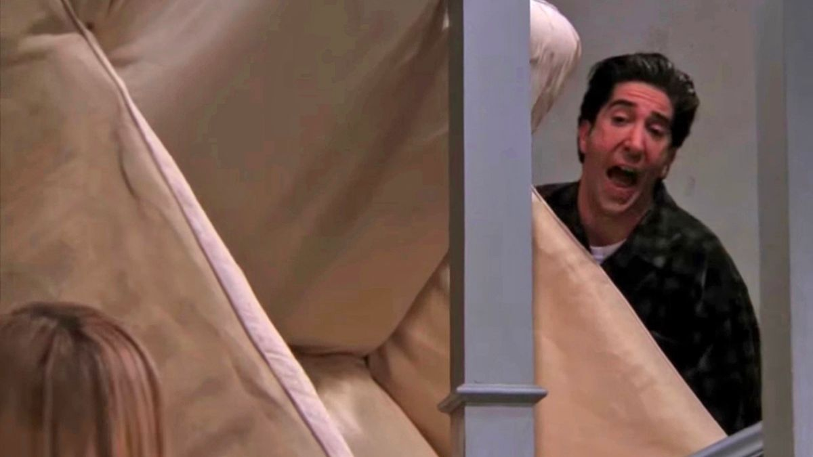

in this part of the website i'm gonna show some noticable and funny phrases. All of the characters have funny phrases, they are gonna be named per character.
Ross Geller
- PIVOT!!
- I wIlL hUnt yOu DoWn aND kIcK YoUr AsS
- You have no idea how much this hurst (while rachel is giving birth)
- UNAGI, is a state of total awareness
- YOU THREW MY SANDWHICH AWAY! MY SANDWHICH!! MY SANDWHICH!!!
- We were on a break!!
rachel green
- who is FICA and why are they getting all my money
- i'm gonna get one of those job things
- all of my friends are either getting pregnant, married or promoted and i'm getting coffee and it's not even for me
- noooo
- how do you expect me to grow if you won't let me blow (after reading an impowering book for women)
- oh that's okay, girls tend not to like me
phoebe buffay
- ohh no
- you'll see, you'll all see. I don'y need your help, i'll make it on my own (after practising acting with joey.)
- OHWW MYY EYESS!! MYY EYESS!!!!
- get of the plane, something wrong with the left philange (to rachel to stall the plane so that ross can tell her that he loves her)
- PICK UP THE SOCK! FOR THE LOVE OF GOD PICK UP THE SOCK JUDY (at phoebe's birthday party to ross's mom)
- they don't know that we know they know we know
- I wish I could but I don't wan to (after ross asking her for help
- I don't even have a 'pla' (afetr relazing she doesn't have a plan for life)
joey Tribbiani
- how you doin'
- i'm curvy and i like it (to rachel's sister after saying he eats to much)
- JOEY DOESN'T SHARE FOOD!!!
- it's a moo point.
- but is hurts my joey's apple (refuring to a man's adam's apple)
- a spoon, your hands, your face (at a game show question asked: 'what do you put in your coffee')
- my frigde broke so I had to eat everyting
- there is a line you can't cross, well that line is a dot to you. (towards chandler after he made out woth joey's girlfriend)
chandler Bing
- I just realised I can sleep woth my eyes open (after listen to one of ross's boring stories about dinosaurs.)
- someone on the subway licked my neck. LICKED MY NECK!! (phoebe responding with: owhn he is still alive.)
- somethime I like to hold small stuff and preten d I'm a giant.
- I'm glad we have a rehearsel dinner, I rarely practiev dinners before I eat.
- seriously, good luck marrying me (towards monica after giving a sarcastic comment)
- It's sunday Monica, I don't move on sunday
- I say more dumb things before 9 a.m. than most people in an entire day
- hi I'm chandler and I make jokes when I'm uncomfortable
- until I was 25 i thought the only reply to 'I love you' was 'oh crap'/
- you know I think I don't care